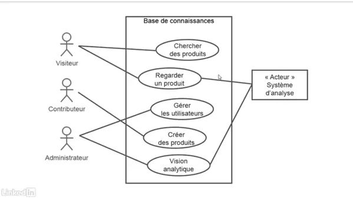
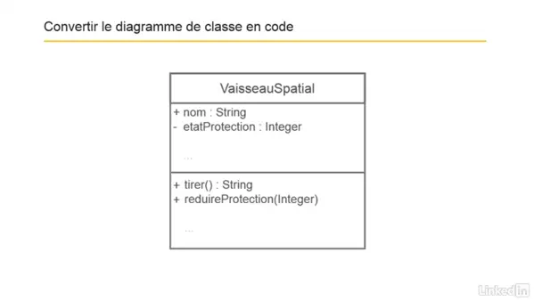

Concepts de base de la conception orienté objet
Deux approches de la programmation
Procédural:
- À base de fonctions qui ne contiennent pas les données.
- Le code est difficilement réutilisable tel que.
- Chaque fonction ou procédure est associée à un traitement particulier.
- Chaque fonction peut être réutilisée à différents emplacements d'un programme.
- Plus simple à conceptualiser.
POO:
- À base d'objets qui contiennent les données.
- Le code est réutilisable.
- Le code est scindé en entités autonomes (classes).
- Les données sont protégées par l'encapsulation.
La classe en programmation
Une classe permet de créer un ou plusieurs objets. Toutefois, une classe n'est pas considérée comme un objet. Elle décrit ce que seront les objets à venir.
La composition d'une classe
- Le nom
- Les propriétés
- les méthodes
Les objets en programmation
Un objet est une entité abstraite et autonome. Il posséde des propriétés qui permettent une description de lui-même, ainsi que des comportements caractérisés par des méthodes.
Les 4 piliers de la Programmation Orientée Objet
L'abstraction
Le rôle de l'abstraction est de ce focaliser sur l'essentiel et donc d'ignorer les détails.
L'encapsulation
Cela fait référence au regroupement des propriétés et des méthodes au sein d'une seule unité, la classe. Il est également possible de restreindre l'accès aux informations de celle-ci.
L'héritage
La notion d'héritage permet, par exemple, à une classe "enfant", de récupérer toutes les propriétés et méthodes de la classe "parent".
Le polymorphisme
Une classe "enfant", qui hérite des méthodes d’une classe "parent", peut modifier le comportement de certaines d'entre elles pour les adapter à ses propres besoins. On parle alors de polymorphisme d'héritage.
Analyser un problème en programmation
Le processus de conception orientée objet
Ce processus comporte 5 points importants:
- Recceuillir les besoins.
- Décrire l'application.
- Identifier les principaux objets.
- Décrire les intéractions.
- Créer un diagramme de classe
La définition des besoins
Besoins fonctionnels
Que font-ils ? Caractéristiques, capacités.
Exemple:
l'application doit continuer à fonctionner sans connexion réseaux.
Elle doit permettre à l'utilisateur de créer des messages de 140 caractères.
Le programme doit permettre de générer des reçus par e-mail.
L'application permet à l'utilisateur de chercher par non de client, numéro de téléphone ou numéro de commande. etc
Besoins non fonctionnels
Aide, droit, performance, support, sécurité.
Exemple:
Le système doit répondre au recherche dans les 2 secondes.
Le supponrt est disponible par téléphone, du lundi au vendredi, de 8h à 18h.
L'initiation à UML (unified modeling language)
Langage de Modélisation Unifié. Ce langage n'est pas un langage de programmation. Il s'agit d'une notation graphique spécifique pour l'élaboration de schémas dans un système orientée objet.
Les cas d'utilisation de la conception orientée objet
Ce processus nécessite de réunir 3 informations importantes:
- L'objectif: le but de l'application.
- L'acteur: personne suceptible d'utiliser l'application.
- Le traitement: comment le problème est-il traité habituellement.
Il est conseillé d'exprimer l'objectif à l'aide de phrase courte tel que:
- Enregistrer un nouveau membre.
- Transférer des fonds.
- Acheter des articles.
- etc ...
Le scénario représente le détail permettant d'atteindre l'objectif fixé. Il doit être rédigé dans un langage simple. Il est possible d'utiliser les listes à puces, pour faciliter sa rédaction, ainsi que sa lisibilité. Il doit également comprendre, la gestion des cas comme, les ruptures de stock, les commandes utilisateur non finalisé, etc ...
L'identification des acteurs
Dépendamment de la nature du projet (application, logiciel, etc...) les acteurs peuvent être des systèmes externes / organisations. Il est donc nécessaire de les identifier. (Sources de données externes, service web, autres applications d'entreprise ...)
Concernant les acteurs humains, il peut être nécessaire de définir les rôles des personnes. Il faut mettre l'accent sur l'objectif que l'acteur veut accomplir en tenant compte qu'il peut occuper différentes fonctions (directeur, responsable des achats, équipe de production, équipe de direction etc...)
Pour simplifier l'identification, il est possible de définir quel sont les principaux acteurs et les acteurs secondaires.
L'identification des scénarios
Lors de l'identification d'un scénario, l'objectif que l'acteur souhaite accomplir est très important. Il est nécessaire de mettre l'accent sur l'objectif.
Il faut également prendre en compte les scénarios multiples.
La rédaction du scénario doit se faire à l'aide de phrases courtes et conçises. Il est important de mettre l'accent sur l'objectif et d'éviter de rentré dans une technicité qui n'est pas nécessaire dans ce cas.
Une fois la rédaction du scénario terminé, il ne faut pas hésiter à ce poser quelques questions pour être certain de ne rien oublier.
- Qui effectue les tâches d'administration du système ?
- Qui gère les utilisateurs et la sécurité ?
- Qu'advient-il si le système tombe en panne ?
Réalisation d'un diagramme de cas d'utilisation
Il sert à représenter l'intéraction qu'il peut y avoir entre plusieurs cas d'utilisation et plusieurs acteurs entre eux. Cepandant ce n'est pas une substitution au schéma d'un cas d'utilisation.
Définition d'une user story | description des besoins de l'utilisateur
C'est un format plus simple et plus court qu'un cas d'utilisation. Il décrit un petit scénario du point de vue exclusif de l'utilisateur concentré uniquement sur ses objectifs.
Ce format comporte 3 points:
- Le type d'utilisateur
- les besoins de l'utilisateur
- La raison de ses besoins (pourquoi ?)
Exemple:
Je suis un client d'une boutique en ligne, j'aimerai avoir la possibilité d'effectuer une recherche par mot clé, pour trouver des articles pertinents.
En résumé:
Initiation à la modélisation
Création d'un modèle conceptuel
Il s'agit d'identifier les objets les plus importants de la futur application.
Identification des objets
Une fois l'identification terminé, les futurs objets sont listé de façon à vérifier s'il n'y a pas redondance de l'information.
Identification des relations entre les objets

Identification des responsabilités
Affectation des responsabilités
Exemple d'affection:
Le fait de vérifier l'état de la commande est initié par le client.
Question: la vérification doit se faire par le client ou par la commande ?
Sachant qu'un objet doit être responsable de lui même, Le responsable de la vérification de la commande est la commande et non le client.

Dans le schéma d'affectation, le client n'a aucune responsabilité alors que la commande en possède un grand nombre.
Il est important de garder en permanence à l'esprit, que ce n'est pas celui qui initie une action, qui en a forcément la responsabilité.
La répartition des responsabilités à différents objets est importante. Cela permet d'avoir un certain équilibre au sein de l'application.
L'utilisation des CRC
- C: Classe: le nom de la classe.
- R: Responsabilité: la prise en charge.
- C: Colaborateur: les classes qui intéragissent avec la classe en question.
Lors de l'utilisation des cartes CRC, si une classe a besoin de deux cartes, ceci est un indice incitant a repenser la classe en question.
Création des classes orientées objet
Création du diagramme de classe
Pour la création d'une classe, 3 éléments sont nécessaires:
- Le nom
- Les propriétés
- Les méthodes
Une classe se nomme toujours au singulier, et commence par une majuscule.
Dans un diagramme de classe, les signes "+" et "-", représentent la visibilité de la propriété et/ou de la méthode à l'extérieur de la classe. Cette pratique, renvoie à l'un des piliers de la POO, c'est l'encapsulation.
Conversion d'un diagramme de classe dans différents langages de programmation
Constructeur
L'ajout de la méthode portant le nom de la classe permet d'attribuer les valeurs de propriétés souhaitées lors de l'instanciation de la classe.
Constructeur en UML
La surcharge permet d'intancier plusieurs objets ayant des valeurs de propriétés différentes avec une même classe.
Destructeur
La destruction d'un objet inutilisé permet de récupérer des ressources en mémoire.
Utilisation d'une propriété statique / partagée
Découverte de l'héritage, l'interface, l'agrégation et la composition
Identification des situations d'héritage
Utilisation de l'héritage
Appeler une méthode dans la superClasse
Utilisation des classes abstraites
Une classe abstraite est une classe qui n'est pas instancier. Cepandent, si elle a des enfants, ses propriétés et méthodes restent disponibles.En JAVA et en C#, Il suffit de faire précéder le nom de la classe par le mot clé abstract. le principe de la classe abstraite n'est pas disponible avec tout les langages de programmation.
Utilisation d'une interface
Il s'agit d'un regroupement contenant la signature des méthodes disponibles pour différentes classes.
L'utilisation des méthodes disponibles dans un interface se fait via une classe grâce au mot clé implements.
Il est important d'implementer toutes les méthodes présentent dans l'interface, car lors de la compilation, si une méthode n'est pas implémenté, cela provoquera une erreur.
Implémentation d'une interface en UML
Utilisation des agrégations et de la composition
L'agrégation permet de définir une entité comme étant lié à plusieurs entités d'une classe.
Exemple:
Une université a beaucoup d'étudiants.
Agrégations et composition en UML
La composition contrairement à l'agrégation, induit la notion de propriété.
Concepts avancés de la POO
Les diagrammes de classe vu précédemment rentrent dans la catégorie des diagrammes structurels et/ou statiques
Ils sont pratique pour la représentation de différents élements tel que, la liste des classes dans une application, l'héritage et la composition, il permettent également de visualiser comment les acteurs intéragissent avec un système. En revanche ils ne sont pas adaptés pour représenter la durée de vie d'un objet ou encore l'intéraction de différents objets entre eux.
Création d'un diagramme de séquence
Les différents diagrammes UML
Le diagramme d'état-transition
Il permet de mettre en avant les différents états qu'un objet peut avoir au cours de sa vie, et également, le fonctionnement lors de la transition d'un état à l'autre.
Le diagramme d'activité
Différents outils UML

Les patrons de conception ou design patterns
C'est un concept destiné à resoudre des problèmes récurrents en orientation objet. Il servent à décrire des procédés de conception généraux indépendant du langage de programmation utilisé. Ils figurent parmis les bonnes pratiques en programmation.
Les principes généraux
Les design patterns sont divisés en trois groupe.
- les modèles de création ou creational patterns: ils traitent de la création des objets.
- Les modèles structurels ou structural patterns: ils traitent la façon dont les classes sont conçus. Ils sont utiles avec les notions d'héritage, de composition, d'agrégation etc...
- les modèles de comportement ou behavioral patterns: ils se concentrent sur la communication entre les objets du programme en cours d'exécution.
Le Singleton
Ils permet d'avoir une seule intance d'une classe dans une application. Sa mise en oeuvre est représenté par un classe contenant une méthode statique créant une instance, uniquement si il n'en existe pas déjà une. Sinon elle renvoie voir l'objet existant.
Le Memento
Il permet d'annuler un état à l'intérieur d'un objet sans violer l'encapsulation.